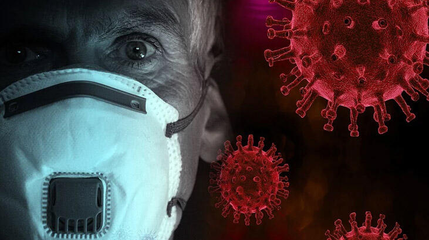

Covid-19 Hakkında
Covid-19 Nedir?
İlk olarak Çin'in Wuhan bölgesinde, 2019 yılı Aralık ayının başında görülmüş olup bu bölgede bulunan yetkililer tarafından tanımlandığı için gayri resmi Wuhan virüsü olarak da bilinir. Bu virüs solunum yolu enfeksiyonuna sebep olan ve insandan yalnızca insana bulaşan bir virüstür. Dünya Sağlık Örgütü (WHO), virüsün resmi adını SARS-CoV-2 (Şiddetli Akut Solunum Sendromu-Koronavirus-2) olarak belirlenmiştir. WHO, bu virüsün sebep olduğu hastalığı tanımlamak için COVID-19 terimini kullanmaktadır. Koronavirüsler, elektron mikroskobuyla bakıldığından yuvarlak ve üzerinde çıkıntıları olan bir taça benzetildiği için, Latince’de taç anlamına gelen koronadan kelimesiyle adlandırılmışlardır.
Yeni Covid-19 Nedir?
Yeni koronavirüs hastalığı (Covid-19), ilk olarak 13 Ocak 2020 tarihinde Çin’in Vuhan eyaletinde yüksek ateş ve nefes darlığı ile tanımlanan yeni viral solunum yolu hastalığıdır. Hastalığın damlacık ve temas yoluyla bulaştığı bilinmektedir. Oluşturduğu küresel salgın durumundan ötürü pandemi olarak tanımlanmaktadır. Yeni koronavirüs hem hayvanları, hem de insanları etkileyebilen koronavirüs ailesinin bir türüdür. Geçmişe bakıldığında koronavirüs ailesinden bazı farklı virüslerin, MERS (Orta Doğu Solunum Sendromu) ve SARS (Şiddetli Akut Solunum Sendromu) gibi şiddetli görülen solunum hastalıklarına sebep olduğu görülmektedir.
Covid-19 Belirtileri
Peki tüm dünyada pandemiye sebep olan bu virüsün sizde de olabileceğini nasıl anlarsınız? İşte belirtileri...
Covid-19'un en yaygın semptomları;
Daha seyrek olarak görülen semptomlar;
Ciddi Semptomlar;